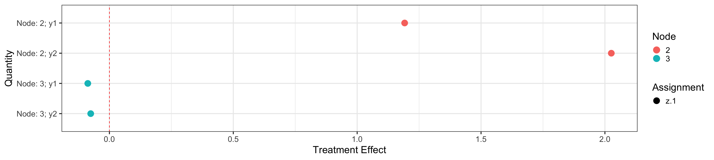

Usage of MrSGUIDE Package
Peigen Zhou
2020-10-12
Source:vignettes/UsageOfMrSGUIDE.Rmd
UsageOfMrSGUIDE.Rmd
Introduction to MrSGUIDE
The MrSGUIDEpackage stands for Multiple Responses Subgroup identification using GUIDE style algorithm. It aims to provide a statistical analysis for subgroup identification.
The original GUIDE algorithm is developed by Professor Wei-Yin Loh, which has more features. MrSGUIDE only uses GUIDE Gi for subgroup identification for single and multiple responses. If you like MrSGUIDE and want to explore more, please try GUIDE!
The general analysis pipeline is as follows:
- Construct a regression tree
- Provide bootstrap confidence interval for estimated treatment effect within tree node
- Visualize the tree and treatment effect
- Provide variable importance
Installation
MrSGUIDE can be installed from GitHub repository “BaconZhou/MrSGUIDE” now. And users need to download and install devtool first from CRAN by the following command:
install.packages("devtools")
After devtools has been installed, we can install MrSGUIDE package using commands:
library(devtools) install_github("BaconZhou/MrSGUIDE")
A quick example
Here we provide a quick example to illustrate the typical usage of MrSGUIDE package. The example is demonstrated through a simulated dataset.
We first load the package and generate a simulated dataset. Here our sample size is 400, the number of numerical features is 3 and number of categorical features is 2. The treatment assignment is binary with equal probability. There are two outcomes.
\[\begin{align*} y_1 &= x_1 + I(Z=1)I(\text{gender}==\text{Female}) + \epsilon_1 \\ y_2 &= x_2 + 2I(Z=1)I(\text{gender}==\text{Female}) + \epsilon_2 \\ \epsilon_1 &\sim N(0, 1),\quad \epsilon_2 \sim N(0, 1) \end{align*}\]
set.seed(1234) N = 400 np = 3 numX <- matrix(rnorm(N * np), N, np) ## numerical features gender <- sample(c('Male', 'Female'), N, replace = TRUE) country <- sample(c('US', 'UK', 'China', 'Japan'), N, replace = TRUE) z <- sample(c(0, 1), N, replace = TRUE) # Binary treatment assignment y1 <- numX[, 1] + 1 * z * (gender == 'Female') + rnorm(N) y2 <- numX[, 2] + 2 * z * (gender == 'Female') + rnorm(N) train <- data.frame(numX, gender, country, z, y1, y2) role <- c(rep('n', 3), 'c', 'c', 'r', 'd', 'd')
Specifically, numX contains all numerical features. gender and country are two categorical features. z is the binary treatment assignment and y1 and y2 are two responses. train is the data frame contains all of them. role is a vector provide the role of each column.
Using MrSFit(), we could fit a regression tree to the simulated dataset. Here we fit a regression tree with the default option provided by MrSFit().
mrsobj is the return object from MrSFit(), it could then be passed to other functions in the MrSGUIDE package. For example printTree() will print the tree result.
printTree(mrsobj = mrsobj)
## ID: 1, gender = { Female, NA }
## ID: 2, Size: 200 [Terminal]
## Outcome Models:
## y1 Est SE
## X1 0.878
## z.0 -0.075 0.108
## z.1 1.192 0.147
## - - - - - - - - - - - - - -
## y2 Est SE
## X2 0.937
## z.0 -0.078 0.103
## z.1 2.026 0.139
## - - - - - - - - - - - - - -
## ID: 1, gender = { Male }
## ID: 3, Size: 200 [Terminal]
## Outcome Models:
## y1 Est SE
## X1 0.986
## z.0 0.097 0.11
## z.1 -0.087 0.154
## - - - - - - - - - - - - - -
## y2 Est SE
## X2 1.164
## z.0 0.128 0.101
## z.1 -0.075 0.14
## - - - - - - - - - - - - - -You can also set detail = FALSE to hide the detail.
printTree(mrsobj = mrsobj, details = FALSE)
## ID: 1, gender = { Female, NA }
## ID: 2, Size: 200 [Terminal]
## ID: 1, gender = { Male }
## ID: 3, Size: 200 [Terminal]MrSGUIDE also provide plotTree() function which used following packages:
visNetworkggplot2
The return object is a list contains three items:
- A tree result
treePlot(require,visNetwork) - A data frame used for plotting
nodeTreat - A node statistic plot
trtPlot(require,ggplot2)
for (pack in c('visNetwork', 'ggplot2')) { if(pack %in% rownames(installed.packages()) == FALSE) {install.packages(pack)} }
plotObj <- plotTree(mrsobj = mrsobj)
plotObj$treeplot
The node id and sample size are shown in the terminal node. Each split variable is plotted inside node.
plotObj$nodeTreat
## Estimate SE Assignment Outcome Node Quantity ymin ymax
## 2 1.191655 0.146651 z.1 y1 2 Node: 2; y1 0.9042190 1.4790910
## 21 2.025814 0.138885 z.1 y2 2 Node: 2; y2 1.7535994 2.2980286
## 22 -0.087283 0.153678 z.1 y1 3 Node: 3; y1 -0.3884919 0.2139259
## 211 -0.075482 0.140495 z.1 y2 3 Node: 3; y2 -0.3508522 0.1998882
## zalpha
## 2 1.96
## 21 1.96
## 22 1.96
## 211 1.96plotObj$trtPlot

MrSGUIDE also provide predictTree() function, which can be used to predict node id also the outcomes.
newx <- train[1,] predictNode <- predictTree(mrsobj = mrsobj, newx, type='node') predictY <- predictTree(mrsobj = mrsobj, newx, type='outcome') predictY
## node y1 y2
## 1 2 -1.063466 -1.154102To display the tree into LaTex, MrSGUIDE also export a function writeTex() which can write the tree into LaTex format.
writeTex(mrsobj, file = 'test.tex')
The test.tex file should be compiled via LaTex + dvips + ps2pdf.
\documentclass[12pt]{article}
%File creation date:2020-05-07 12:08:51
\usepackage{pstricks,pst-node,pst-tree}
\usepackage{geometry}
\usepackage{lscape}
\pagestyle{empty}
\begin{document}
%\begin{landscape}
\begin{center}
\psset{linecolor=black,tnsep=1pt,tndepth=0cm,tnheight=0cm,treesep=.8cm,levelsep=50pt,radius=10pt}
\pstree[treemode=D]{\Tcircle{ 1 }~[tnpos=l]{\shortstack[r]{\texttt{\detokenize{gender}}\\$\in$ \{ Female, NA\}}}
}{
\Tcircle[fillcolor=red,fillstyle=solid]{ 2 }~{\makebox[0pt][c]{\em 200 }}
\Tcircle[fillcolor=yellow,fillstyle=solid]{ 3 }~{\makebox[0pt][c]{\em 200 }}
}
\end{center}
%\end{landscape}
\end{document}This quick example aimed at provide a general understanding of what MrSGUIDE is capable of doing. In the rest of the chapter, we will show more instruction about how to use the function step by step.
Arguments
Before feeding the data into MrSFit(), users first need to learn how MrSFit() consider the **role* of each variables.
Data arguments
MrSFit() takes two key arguments for dataset, first is dataframe, second is role. The dataframe should be an R data.frame(). role tells MrSFit() the function of each column in dataframe. Current role has following type:
- c Categorical variable used for splitting only.
-
d Dependent variable. It there is only one d variable,
MrSFit()will do single response subgroup identification. - f Numerical variable used only for fitting the regression models in the nodes of tree. It will not used for splitting the nodes.
- h Numerical variable always holds for fitting the regression models in the nodes of tree.
- n Numerical variable used both for splitting the nodes and for fitting the node regression models.
- r Categorical treatment (Rx) variable used only for fitting the linear models in the nodes of tree. It not used for splitting the nodes.
- s Numerical variable only used for splitting the node. It will not be used in for fitting the regression model.
Also, user should make role is a vector with the same number of columns as dataframe. In the above example, the train is a data.frame() object with 8 columns, and role also has the same number of values.
## [1] TRUEModel arguments
bestK
In terms of the modeling aspect, the most important argument to feed into the MrSFit() function is bestK. The bestK is the number of variable used for stepwise selection. MrSFit() can fit two types of model.
The first model with parameter bestK = 0 only regress treatment assignment inside each terminal node.
\[\begin{equation} y_j = \beta_{j0} + \sum\limits_{z = 2}^{G}\beta_{jz}I(Z=z), i = 1, \dots, J. \end{equation}\]
mrsobj <- MrSFit(dataframe = train, role = role, bestK = 0) plotObj <- plotTree(mrsobj) plotObj$treeplot
The second model with parameter bestK = 1 will include one best linear regressor which is selected from variables with role in f and n. If you choose bestK = 2, MrSFit() will choose at most two variables inside each terminal node with stepwise regression based on BIC criterion. For example, when bestK = 1, MrSFit() fits model:
\[\begin{equation} y_j = \beta_{j0} + \beta_{j*}X_{j*} + \sum\limits_{z = 2}^{G}\beta_{jz}I(Z=z), i = 1, \dots, J, \end{equation}\] where \(X_{j*}\) can be different for each \(Y_j\).
bootNum and alpha
The second important argument to feed into the MrSFit() is bootNum. It is used for control the number of bootstrap time to calibrate the confidence interval length. alpha is the desired alpha level of the interval. The detail algorithm can be found in Loh ().
In general, we recommend run bootNum = 1000 to calibrate the confidence interval of treatment effect estimators. But it will take more times. For illustration purpose, here we set bootNum = 50 and alpha = 0.05.
mrsobj <- MrSFit(dataframe = train, role = role, bestK = 1, bootNum = 50, alpha = 0.05)
## Use bootstrap for confidence interval! SLOW!
## finish 10 bootstrap samples.
## finish 20 bootstrap samples.
## finish 30 bootstrap samples.
## finish 40 bootstrap samples.plotObj <- plotTree(mrsobj) plotObj$treeplot
plotObj$nodeTreat
## Estimate SE Assignment Outcome Node Quantity ymin ymax
## 2 1.191655 0.146651 z.1 y1 2 Node: 2; y1 0.6109764 1.7723336
## 21 2.025814 0.138885 z.1 y2 2 Node: 2; y2 1.4758857 2.5757423
## 22 -0.087283 0.153678 z.1 y1 3 Node: 3; y1 -0.6957856 0.5212196
## 211 -0.075482 0.140495 z.1 y2 3 Node: 3; y2 -0.6317853 0.4808213
## zalpha
## 2 3.959595
## 21 3.959595
## 22 3.959595
## 211 3.959595plotObj$trtPlot

Tree arguments
MrSFit() has arguments to control tree growing and pruning.
maxDepth, minTrt and minData
The tree depth is controlled by maxDepth with default value maxDepth = 5. You can also change maxDepth = 1 with only a root node.
mrsobj <- MrSFit(dataframe = train, role = role, bestK = 1, maxDepth = 1) plotObj <- plotTree(mrsobj) plotObj$treeplot
minTrt controls inside a node, how many data should each treatment levels contains. For example, if we set minTrt = 30, the terminal nodes of resulting tree have both 30 observations in Z=0 and Z=1
mrsobj <- MrSFit(dataframe = train, role = role, bestK = 0, minTrt = 30) plotObj <- plotTree(mrsobj) plotObj$treeplot
minData controls how many data points should include inside each terminal nodes. For example, if we set minData = 50, each terminal node contains at least 50 observations.
CVFolds and CVSE
MrSFit() uses cross-validation for tree pruning. CVFolds controls the number of cross-validation, and CVSE is a parameters which control the error allowance. If we set CVFolds = 0, MrSFit() will not perform cross-validation for pruning.
mrsobj <- MrSFit(dataframe = train, role = role, bestK = 0, maxDepth = 5, minTrt = 1, minData = 2, CVFolds = 0) plotObj <- plotTree(mrsobj) plotObj$treeplot
In general, we recommend setting CVSE=0.5 and CVFolds=10, a smaller CVSE will provide a larger tree result.
mrsobj <- MrSFit(dataframe = train, role = role, bestK = 0, maxDepth = 5, minTrt = 1, minData = 2, CVSE = 0.5, CVFolds = 10) plotObj <- plotTree(mrsobj) plotObj$treeplot
It is the basic usage of the package.